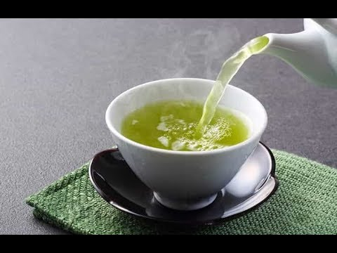

Teami Blends | Health products inspired by the natural benefits of tea
 [BIRTHDAY SALE] Get a FREE 30 Day Detox Sample on $50+! Shop Now 0 Shop All Best Sellers Tea Blends Wellness Powders Natural Skincare Matcha Tumblers + Accessories Best Bundles New About Our Story Reviews FAQ Afterpay Contact Us Store Locator Retail Partners Blog All Posts Lifestyle Recipes E-books Press Rewards Join Now Login 0Teami Blends Tea
New in Skincare Luxe Beauty Fridge
Upgrade your beauty routine by increasing the shelf-life and efficacy of skincare products by keeping them chilled!
SHOP NOWTEA + WELLNESS
SHOP NOWTUMBLERS + ACCESSORIES
SHOP NOWSKINCARE
SHOP NOWBEST SELLERS
Detox Starter Pack
Reset, Refresh and Transform in 30 Days! Our 100% All-Natural Detox Program is eas...
$84.99 $93.42
2165 reviews BESTTeami Luxe Skincare Fridge
Upgrade your beauty routine by increasing the shelf-life and efficacy of skincare ...
$150.00
9 reviews NEWGreens Superfood Powder
16 nutrient-bursting greens in one scoop
$29.99
958 reviews BESTBeauty Mask, Restorative Clay Facial
Bring your skin back to life with our super beauty mask facial! Reveal smooth, h...
$36.00
41 reviews NEW*LIMITED EDITION*
fall detox kit
A new season can mean new healthy habits, or returning to habits you might have lost along the way. It’s time to reset your intentions for the Fall months toward creating wellness routines that help you feel your best!
GRAB YOURS!*COMMUNITEA REWARDS*
SHOP + EARN
Earn MAJOR discounts + FREE Teami for doing what you love, like shopping, sharing, and investing in your healthy lifestyle!
JOIN NOW!WE LOVE OUR COMMUNITEA
from 10962 reviews Amazing product!I really love this mask, smells so good and leave my skin so fresh and smooth! I just love it ❤️
Yessy 09/29/2020 Green Tea Detox Mask Simply the best!!Out of all the facial scrub I have tried over the counter green tea facial scrub has been the best! It Does not irritate my skin or give me allergies- instead it does a great job making my face feeling smooth and fresh!! I LOVE IT!!
Marlen 09/29/2020 Green Tea Facial Scrub My Favorite Face WashI love this face wash it smells so good and leaves my face glowing and feeling smooth. I have really dry skin and this face wash doesn't over dry my skin. I LOVE IT!!!
ANDREA 09/29/2020 Gentle Superfood Liquid Cleanser Best Greens SuperfoodThis is my favorite greens. I have tried many brands but this will always be my go too!
Jojo 09/29/2020 Greens Superfood Powder Tasty and good for you!Unlike typical green blends, this Teami green blends is so delectable! It doesn’t throw off the taste of your smoothies or juices, rather it enhances it with the sweet taste of matcha and compliments any fruit blend you mix it into! It would taste great even as a hot matcha latte! Highly recommend!
Amari 09/28/2020 Greens Superfood Powder Improving skin conditionI love this product. Since I took this, I can feel a difference in my skin. I can see it looks healthier than before. This is a must have!
olga 09/27/2020 Beauty Butterfly Collagen Favorite CleanserI recently found out it doubled as a makeup remover and I have to say Im loving even more! It smells amazing, I get a deep cleaning, it leaves my skin soft, refreshed and hydrated. I’ll never use any other cleanser but this one!
Janet 09/27/2020 Gentle Superfood Liquid Cleanser Beauty mask ‚ù§Ô∏èI got it mask I few weeks ago I love it, and smells so good. Amazing product ‚ù§Ô∏èI Already seem the different on my face. The color is amazing too üòçüòçüòç.
Alba Brodie 09/23/2020 Beauty Mask, Restorative Clay Facial MagicalStarts from eye catching moment when the color is magically changed followed by lingering fragrance to allure your taste buds to be please. I'm more than satisfied I'm loving this magical teaüíï
Crisavel Posas Santos 09/23/2020 Butterfly Tea Blend Excellent üíØI'm on my 7days of first cycle detox but as early as day 3, I can feel the difference in my body and the people surrounds is continuously praising what they notice. Yes it's pricey but worth every penny. I'm happy and satisfied to finally found a healthy routine added to my busy lifestyle.üíñ
Crisavel Posas Santos 09/23/2020 30:7 Best Detox PlanI'm an Aesthetician of 14 yrs. I absolutely love the repair oil. It takes my dermaplaning to another level for my clients. So beautiful and smells amazing. I am ordering the 3 oils together. Can't wait!!!!!!!!!!!!!!!!!!!
Aimee Knauff 08/22/2019 Facial Oil BundleI loveeee this tea! It is not the nicest tasting one but the lemon flavor does:) it makes me go and it takes my bloat was away. I don’t have extreme problems with vowel movements but I do get bloatness. This helps a lot
Ericka Vargas 08/19/2019 Colon Cleanse Tea BlendI have been using this product and the detox mask for a few years. I love it and my skin really suffers when I don’t reorder on time and have to wait for my products. I’m 57 and my skin looks amazing less noticeable wrinkles by far and no acne or sensitivity from the products. I wouldn’t be without the vitamin c serum. I’m obsessed. I’ve paid for many high end products but this little gem is a winner in my books and all I’ll use.
Dianne Zemsta 08/15/2019 Hibiscus Infused Vitamin C Serum shop our productsconnect. share. love.
@teamiblendsIT’S NOT JUST TEA , IT’S A LIFESTYLE
AS SEEN ON:
Pepperjam Verification
© Copyright 2019 Teami LLC.
Home Shop Blog Loyalty Program Our Story Contact Us Press Work @ Teami Retail Partners Store Locator Refer a Friend! Terms & Conditions Colon Cleanse Sleep-Aid Morning Boost AfterpayUse left/right arrows to navigate the slideshow or swipe left/right if using a mobile device choosing a selection results in a full page refresh
Thank you for your review.
We appreciate all feedback we receive.
My Cart
Loading…
Deal:
Code:
‚ìò
* Codes cannot be combined *